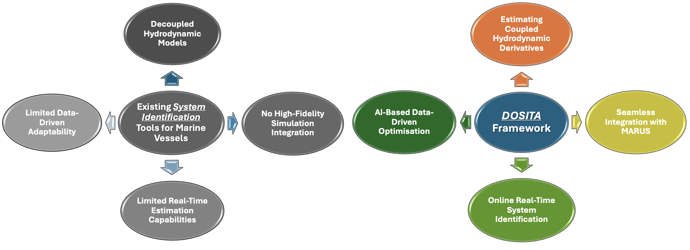
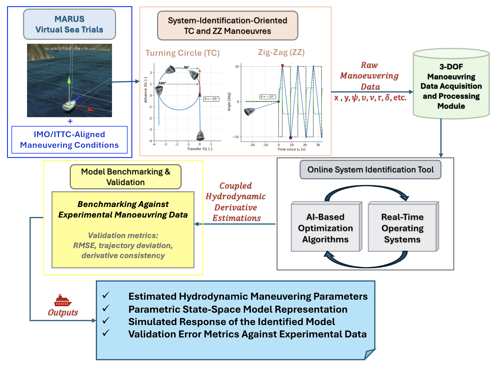

RQ1
How can a data-driven online identification framework enable real-time estimation of coupled hydrodynamic derivatives in nonlinear ship manoeuvring models?
PhD Research Project • Started February 2026
Data-Driven Online System Identification Tool for Autonomous Marine Vessels
AI-Enabled Modelling and Control of Sustainable, Autonomous Marine Vessels for Maritime Decarbonisation
DOSITA is a PhD research project focused on the design and development of an open-source, AI-enabled online system identification framework for autonomous marine vessels, particularly Unmanned Surface Vessels (USVs). The project centres on the real-time estimation of coupled hydrodynamic derivatives using data-driven methodologies, embedded within the high-fidelity simulation environment of MARUS (Marine Robotics Unity Simulator).
This research aims to contribute to the cost-effective decarbonisation and sustainable operation of autonomous marine vessels, aligned with the UK Net Zero target (Net Zero Strategy).
Maritime operations contribute approximately 3% of global greenhouse gas (GHG) emissions, placing growing pressure on maritime stakeholders to reduce their carbon footprint. Although sustainable fuels are under development, operational optimisation—particularly through state-of-the-art AI-enabled technologies—remains an immediate and effective pathway to reduce emissions [1] [2].

How can a data-driven online identification framework enable real-time estimation of coupled hydrodynamic derivatives in nonlinear ship manoeuvring models?
How can AI-enabled machine learning optimisation enhance the overall accuracy, noise robustness, and physical consistency of online nonlinear ship manoeuvring model identification?
How can integration with a high-fidelity simulation and digital twin framework such as MARUS accelerate the development, validation, and deployment of intelligent and sustainable maritime systems?
What is the balance between real-time simulation execution and the accuracy and reliability of hydrodynamic derivative estimation during validation and benchmarking?
DOSITA connects MARUS-based virtual sea trials with structured data acquisition, online identification, AI optimisation, and benchmarking to produce reproducible manoeuvring model updates and validation metrics.

The DOSITA research direction builds on an MSc precursor project that investigated a hybrid MARUS–PINN approach with LLM-guided symbolic discovery for interpretable estimation of manoeuvring hydrodynamic derivatives.
Download the precursor report PDF describing the MARUS manoeuvre suite, preprocessing pipeline, grey-box PINN formulation, and symbolic interpretation layer.
Paria Rezayan
PhD Researcher – Marine Robotics
Sheffield Hallam University
Email: P.Rezayan@shu.ac.uk